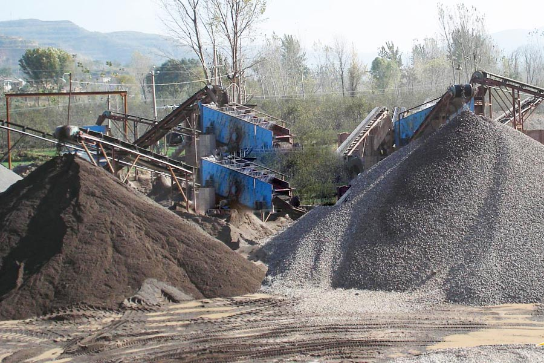

Construction waste crushing production line

Mobile construction waste crushing station for urban construction waste crushing.
small aggregates crushing machine
small aggregates crushing machine. Consistency, cleanliness and 0.075mm particle content requirements highway aggregate production line, size and size distribution, particle shape, particle composition, the mountains of the production line configuration, add new sand, to better meet the highway cement, asphalt and other aggregate of sand and gravel.
Crushed gravel aggregate production line, sand and gravel mining crushing equipment, sand washing and screening equipment, crushing sand and gravel aggregate production line of stone production line process PCL500 (dual motor) configured sets of aggregate production line.

For centuries, construction aggregates, in other words, crushed stone, sand, sand gravel have been played important role in society development and fundamentally improved human’s security, mobility and enhanced mankind’s life quality. a large quantity of sand are produced from sediment deposits. However, nowadays we are experiencing a global shortage of natural sand. The huge consumption of natural sand generate large environmental pressures. So it is necessary to produce manufacture of sand or aggregates from quarried material.
Philippines aggregates production line equipment manufacturer. Fundamental role of sand and aggregate in world In 1850′s and 60′s, many railroads are built all over the world, which required large quantity of aggregate materials. The aggregate was used for roadbed building and ballast to support the ties. With the industry and economy development, the automobile is widely used in human’s daily life in the early 1900′s, which create an large demand for paved roads, then aggregate production increased tremendously for materials such as asphalt and concrete road pavements. In the 21st century, the restoration of transportation infrastructure such as roads, highway, bridges, airport runway, railway beds etc. will require substantial amounts of aggregates. Natural sand resources is limited in the world, so nowadays sand, gravel and crushed stone are used for producing manufactured sand.
Aggregate production line technology and trends, sand and gravel aggregate concrete formulated as a necessity, there is no effective alternative products to replace their status, a key step in the material source selection aggregate production line, process, system design, equipment and technology will of the aggregate product.
Sand and aggregate process line According to world market demand and customers requirements, we have development various series of sand and aggregate production line, which could produce a wide range of materials such as manufactured sand, aggregate and concrete etc. for diversified applications. The production line involves many different types of machines such as coarse crusher, fine crusher, jaw crusher, impact crusher, cone crusher, high pressure mill, sand making machine etc. By different types of machines, you could get different quality and particles size of sand and aggregate materials. With the assistance of sand washing machine, the impurity materials are washed away, high quality sand and aggregate are ready for various applications.
A typical case of aggregate production line and analyze, aggregate production line systems typically include several elements: ① early broken unit, ② semi-finished material storage unit, ③ the crushing unit, ④ screening unit, ⑤ finished material storage unit, ⑥ loading weighing system, ⑦ water supply and water treatment.
Philippines aggregates production line price. Construction waste recycled aggregate production line process, broken old building demolition rubbish are mostly block sizes, it should be processed into a consistent specification aggregate, crushing the main aspects of production.
Leave Me A Message, Now
If you have any questions regarding equipment prices, production line configuration or other problems, you can send a message to us, we will contact you soon.